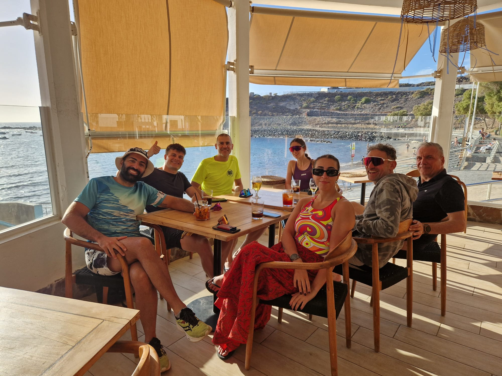
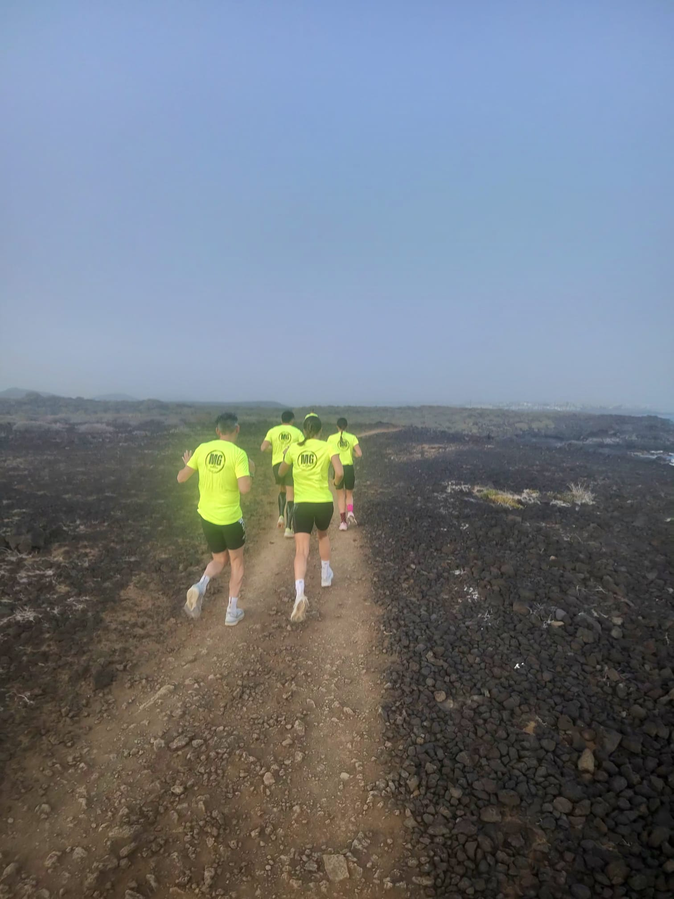
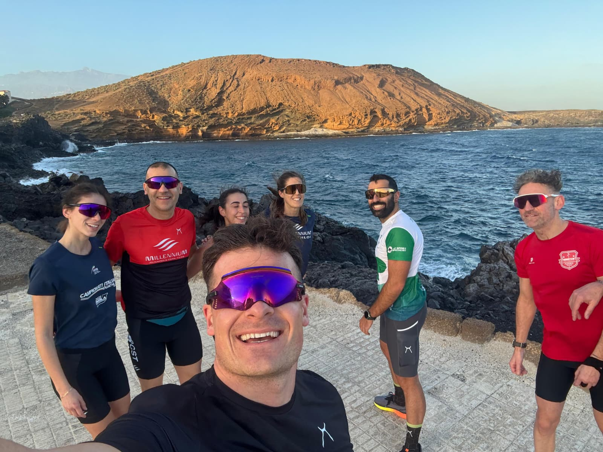

Training Camp Tenerife
Il CAMP per eccellenza nei mesi invernali. Un'esperienza immersiva tra salite vulcaniche leggendarie, vasca olimpionica e pista di atletica per costruire una solida base atletica al caldo.
Vivere il Camp alle Canarie
Allenamento di alta qualità, scenari spettacolari e spirito di squadra.






TENERIFE (ISOLE CANARIE)
Perché Tenerife è la Mecca dell'Endurance Invernale
Il CAMP per eccellenza nei mesi invernali. Paesaggi vulcanici da esplorare in bici, Tenerife rappresenta il meglio soprattutto per la parte ciclismo con salite e discese infinite e paesaggi mozzafiato. Il clima mite tutto l'anno permette di accumulare chilometri di qualità senza i disagi del freddo invernale continentale.
Disponibilità di noleggio bici d'alta gamma direttamente in loco, accesso alla pista di atletica leggera regolamentare e alla piscina olimpionica (50 metri) rappresentano l’ideale per completare un CAMP di assoluto livello tecnico per triatleti, ciclisti e podisti.
⚠️ Posti Limitati: I CAMP saranno attivati al raggiungimento di un numero minimo di atleti e avranno posti strettamente limitati per garantire un affiancamento personalizzato e un servizio di massima qualità. Contattami per verificare la disponibilità del periodo e i costi.